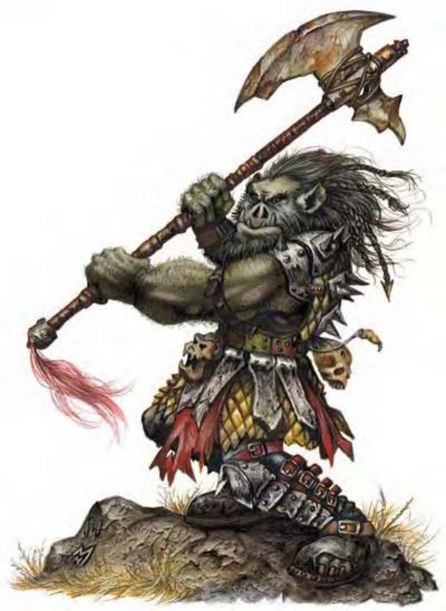

他们看起来像是有着灰皮肤和一头乱发的原始人类。身躯佝偻、前额低，像猪的脸上两颗下颚犬齿突出，就像野猪的獠牙。
兽人是具有侵略性的人形生物，不断掳掠抢夺及与其他生物战斗。长久以来精灵与矮人的宿怨让他们一相见就会开打。
兽人的毛发多为黑色，双眼火红且耳形似狼。他们的衣着偏向使用显眼的色彩，像是血红、芥黄、黄绿或深紫，都是大多数人类讨厌的颜色，装备也肮脏混乱。
成年男性兽人比6英尺高一些，重约210磅。女性则略矮。没有战事时，兽人通常在谋划下一场劫掠或练习战斗技巧。
兽人使用的语言依部落不同，但兽人语为共通理解的语言。有些兽人还通晓地精语或巨人语。
在家乡之外出没的兽人多为武者，数据域位中为1级武者的范例。
| 资料栏位 | 兽人、1级武者 中型人形生物 (兽人) |
| 生命骰 | 1d8+1 (5HP) |
| 先攻 | +0 |
| 速度 | 30英尺 (6格) |
| 防御等级 | 13 (+3镶嵌皮甲)、接触10、措手不及13 |
| 基本攻击/擒抱 | +1 / +4 |
| 攻击 | 弯刃大刀+4近战 (2d4+4 / 18-20)；或标枪+1远程 (1d6+3) |
| 全力攻击 | 弯刃大刀+4近战 (2d4+4 / 18-20)；或标枪+1远程 (1d6+3) |
| 占据/触及 | 5英尺 / 5英尺 |
| 特殊攻击 | ― |
| 特殊能力 | 黑暗视觉60英尺、畏光 |
| 豁免 | 强韧+3、反射+0、意志-2 |
| 属性 | 力量17、敏捷11、体质12、智力8、感知7、魅力6 |
| 技能 | 聆听+1、侦察+1 |
| 专长 | 警觉 |
| 环境 | 温带丘陵 |
| 组织 | 成队 (2-4)、中队 (11-20，加上2个3级军士及1个3-6级干部) 或一团 (30-100，加上150%非战斗人员、每10个成年兽人1个3级军士、5个5级校尉及3个7级队长) |
| 宝藏 | 标准 |
| 阵营 | 偏向混乱邪恶 |
| 进化 | 视人物职业而定 |
| 等级修正值 | +0 |
兽人擅长使用所有简易武器，并偏好选用能在最短期间内造成最多伤害的武器。许多兽人武者或战士也都擅长军用武器中的弯刃大刀或巨斧。他们在隐蔽埋伏与偷袭中喜爱用上这样的武器，有在对自己有利时，才会遵从战争规定（例如遵守停战协议）。
畏光 (特异)：兽人在明亮日光下与“昼明术”半径中会晕眩。
兽人相信若要生存，必得征服，这使得四周的智慧生物饱受威胁。他们经常对其他人形生物开战或备战，包括其兽人部落。他们可以与人一时结盟，却又瞬间背叛。他们的神�o教导他们其他生物都较低等，全世界的事物本应属于兽人，但被那些低等生物偷走。兽人施法者野心勃勃与武者领袖之间的冲突经常导致部落分裂。
兽人社会为父权结构，女性顶多被当作奖品，更甚者只被视为流动财产。男性兽人的骄傲来自其拥有的女性及所生下的子女数量，以及战场勇气、财富与领地大小。他们以战斗伤疤为傲，甚至在仪式上自行刻下伤疤以象征成人。
兽人巢穴可能是洞穴、森林小屋群、堡垒甚至连通地表上下的大城市。部落中有女性（与男性数目相当）、孩童（约为女性数目的一半）及奴隶（每十个男性1个）。
兽人的主神为格努须，单眼之神，无法忍受他的子民有半刻和平。
兽人领袖以野蛮人居多。牧师崇敬的神是格努须，可由下列领域择二：混乱、邪恶、力量或战争（偏好武器：任何矛）。兽人施法者多为导师，喜爱可造成伤害的法术。
兽人特性 (特异)：兽人具有下列种族特性：
― +4力量、-2智力、-2感知、-2魅力。
― 兽人的基本行走速度为30英尺。
― 黑暗视觉可达60英尺。
― 畏光 (特异)：兽人在明亮日光下与“昼明术”半径中会晕眩。
― 母语：通用语、兽人语。额外语言：矮人语、巨人语、豺狼人语、地精语、地底通用语。
― 适合职业：野蛮人。
此处列出的兽人武者在计算种族修正值前，具有下列属性：力量13、敏捷11、体质12、智力10、感知9、魅力8。